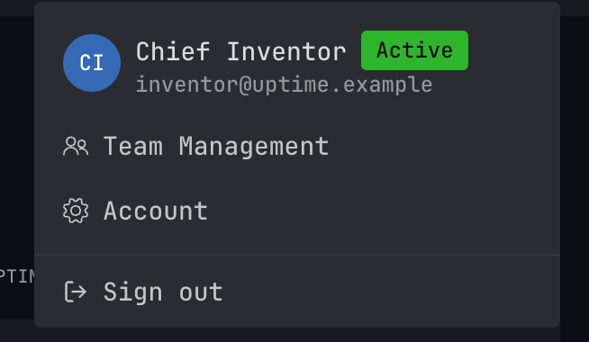
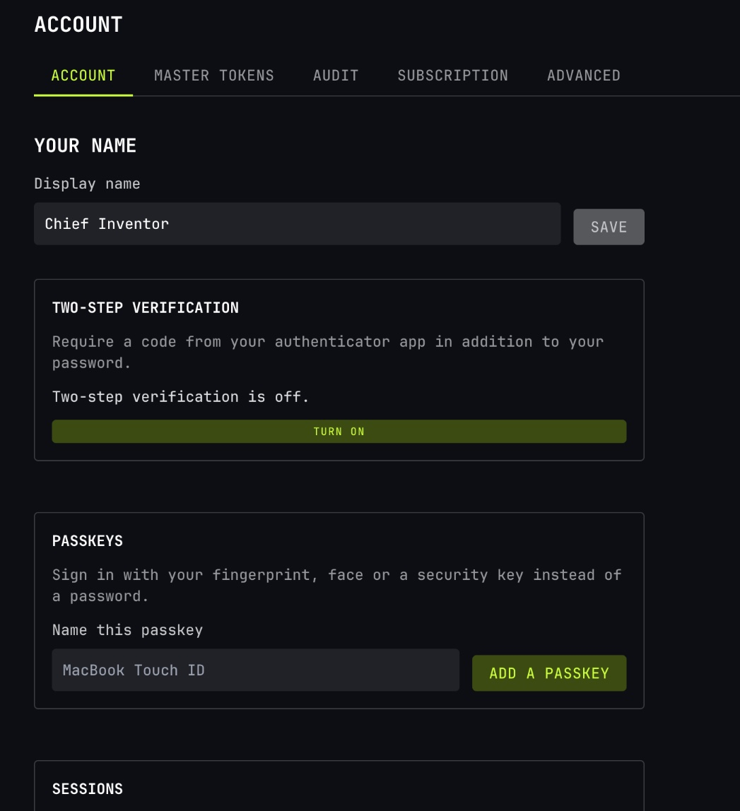
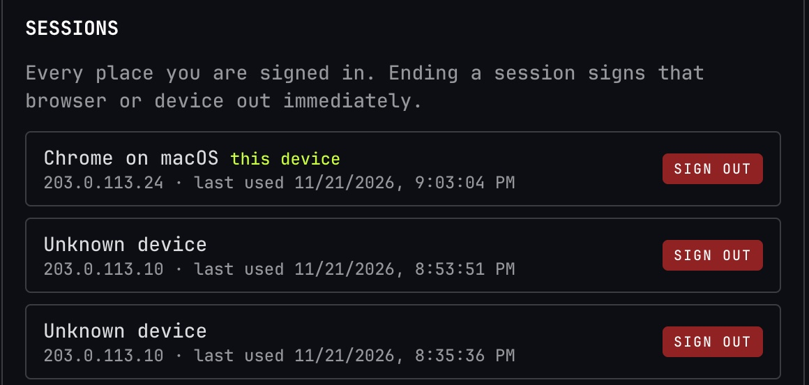

Team, sign-in security and the device limit
Invite people, give them roles, protect your sign-in and see how many devices your server admits.
Invite colleagues, choose what each may do, and protect your own sign-in. Click your initials at the top right: Team Management holds the members, Account your own sign-in.

Invite someone
- Open Team Management.
- Under Invite a member, type the address into Email and pick a role.
- Click Create invite, then confirm it's you.
- Without a mail server, copy the one-time link the page shows and hand it over through a channel you trust. With one, the person gets it by email.

The link expires after seven days, and the pending invitation shows the date. Resend makes a new link and Revoke withdraws the invitation.
To change a role later, pick another one in the member's selector. Disable suspends a member until you click Enable, and Remove takes them out of the account. Each change asks you to confirm, then takes effect at once.
Which role to give
| Role | May do |
|---|---|
| Viewer | See nodes, playbooks and utilities. No secrets, no commands. |
| Manager | Reboot nodes, set hostnames, run playbooks without privileged steps. |
| Admin | Install an OS, open the web terminal, manage secrets and run any playbook. |
Each role includes the one above it. A Super Admin can do everything, including managing members and the subscription. You can also grant a role on a single unit from the Organization page.
Turn on two-step sign-in
- Open Account.
- Under Two-step verification, click Turn on, then confirm it's you.
- Scan the QR code with your authenticator app.
- Type the six-digit code into Code from your app and click Confirm.
- Store the ten recovery codes away from your phone, then click I have saved them.

To make two-step sign-in mandatory for everyone, tick Require two-step verification in Team Management.
See and end your sessions
Sessions on Account lists every browser and script signed in as you, by browser and system, or Unknown device for a script. Your current browser is marked this device. Hover over a row to see the full browser identification.

Click Sign out on a row to end that session, or Sign out of my other sessions to end all but this one, then confirm. You can hold 10 sessions, and a new sign-in beyond that signs out the one used least recently. Give scripts their own user so they do not push your browser out.
The device limit
A server admits 25 devices free. The count is on Account → Subscription. To raise the limit, get an entitlement file at orchestrator.sh/subscription and apply it there.
Lost passwords and single sign-on
The operator resets a forgotten password or a lost authenticator from the server's command line (Recover a lost password or authenticator). Sign-in through an identity provider such as Google is off until the operator sets it up (Email and single sign-on).